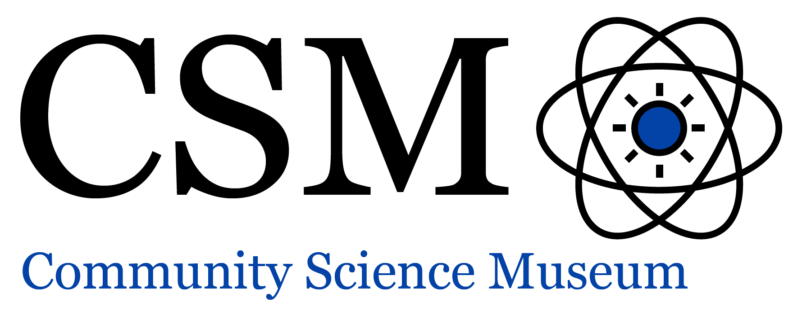

Visit the museum
Location
The museum is located at ----
Admission
The entrance is free for all!
There are guided tours of the museum that leave every hour. These tours are 70 NOK per person.
If you would like to organise a guided tour for your group of 6 or more people, please contact us to arrange the tour.
Opening hours
Monday Closed
Tuesday 10:00-16:00
Wednesday 10:00-16:00
Thursday 10:00-16:00
Friday 10:00-19:00
Saturday 09:00-16:00
Sunday 09:00-13:00
The museum has wheelchair accessibility ramps. It also has audio guides and braille display signs for the visually impaired.
There is a café attached to the museum where you can get light lunches, soft drinks, coffee, snacks and more.
Our shop offers a range of memorabilia from the museum as well as great gifts and activity packs.
For Kids
Are you a young person looking to learn more about science? Come on down to our museum, there’s plenty to see and do!

You can learn about Newtonian physics from our bumper swing, or why not travel back in time and meet our resident "Woolly Mammoth"?
Our exhibits are designed to be accessible for interested minds, so make sure you come ready to learn and explore.

We also have the Young Stars club which meets once a week on Saturday between 10:00 and 13:00 where you’ll get to explore and experiment with our team of experts.
Families
Come join us at the Community Science Museum where we’re committed to making science accessible to all. Entrance is free for all!

During the school holidays we run special holiday clubs where you can join other children your age to go on a journey of discovery.
Each holiday we pick a new theme to explore.
To find out more about the holiday club and how you can join...
Teachers

As a community-driven museum, we want to work with schools to create places of learning and exploring.
Our team are on hand to give your students guided tours of the museum and teach them in our learning Laboratory.

To find out more, send us a message!
News/Events
Night at the museum!
Get your family together for an exciting night in the museum as you sleep over beside dinosaurs and science displays

Bring your own sleeping bag and get ready to rough it as we go exploring the wonders of science.
Visitng professor of Aeronautics
It is our pleasure to announce that Prof Sheila Widnall from the Massachusetts Institute of Technology will be delivering 3 lectures.


She will talk about the development of aeronautics and where the future lies in this exciting ‘space’.